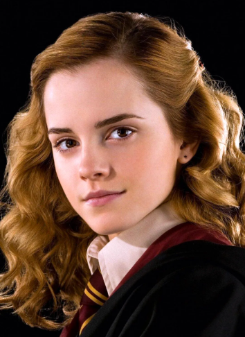

Загальна інформація
Герміона Джин Грейнджер — відьма, народжена маглом, яка дізналася про свої магічні здібності у віці 11 років, і згодом їй запропонували місце для навчання в школі відьмарства і чаклунства Гоґвортсу.
Фільми
- гаррі поттер і філосовський камінь
- гаррі поттер і таємна кімната
- гаррі поттер і в'язень азкабана
- гаррі поттер і келих вогню
- гаррі поттер і орден фенікса
- гаррі поттер і напівкровни принц
- гаррі поттер і смертельні реліквії
- гаррі поттер і смертельні реліквії 2